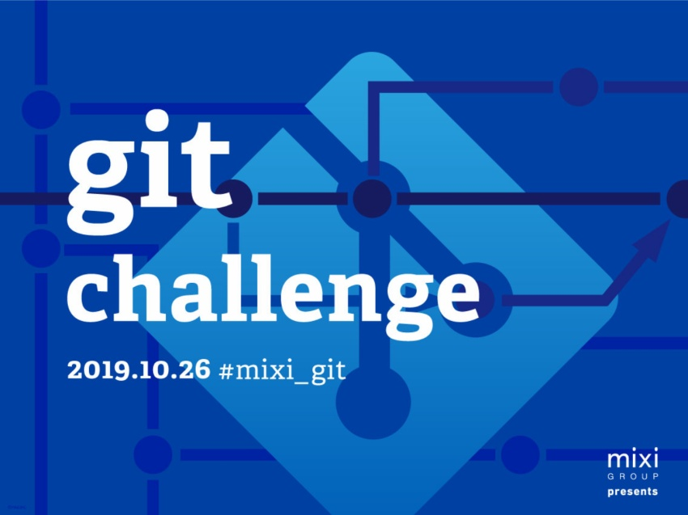

第12回を開催しました。 前回、採点システムを刷新したところ(私の不徳の致すところで)うまく動作しないところがありましたが、今回はそのリベンジマッチです。 と、勝手に息巻いておりました(11階からの改善に関してはコチラ)。
朝からドキドキでしたが、なんと、無事になんの問題もなく git challenge を終えることができました。 やったぜ。
今回新しくした点などを記事にしました:
他にも記事を書いたよ！という人がいれば Issue でも PR でもドシドシ投げてください！
おはようございます！本日はgit challneg#12ですね！このあと、10:40より受付開始です。参加者の皆様をお待ちしております！ #mixi_git pic.twitter.com/8sAWFFNLXm
— ミクシィグループ 新卒採用公式アカウント (@HR_mixi) October 26, 2019
起床チャレンジ成功した #mixi_git
— しゅもん@Dockerで始めるゲームボーイアドバンス開発入門 (@shumon_84) October 26, 2019
起床チャレンジ成功しました！ #mixi_git
— Гова (@cloudear8) October 26, 2019
今日は司会をやります #mixi_git
— らりょす (@raryosu) October 26, 2019
今回は遅刻しなかった#mixi_git
— 意志が弱い (@silmin_) October 26, 2019
起床チャレンジ成功です#mixi_git
— IK (@get_me_power) October 26, 2019
対戦よろしくお願いします #mixi_git pic.twitter.com/xZZNAWqzVu
— かふぇいん (@caffe__ine) October 26, 2019
起床&wifi接続チャレンジ成功した#mixi_git
— ††にっしー†† (@nishinishi172) October 26, 2019
起床チャレンジ成功#mixi_git
— ディオの息子 (@dionomusuko) October 26, 2019
起床チャレンジ成功！#mixi_git
— ﾔﾏｹﾞﾝ (@Ymgn_Bass) October 26, 2019
着弾 #mixi_git
— ramenjuniti (@ramenjuniti) October 26, 2019
#mixi_git
— はわわわっ (@umncsk) October 26, 2019
起きられました
去年のGit Challengeは参加する側でしたが、今日は運営側に潜入してます。頑張ってください。#mixi_git pic.twitter.com/C2NSpl0JIN
— ぶち太郎 (@utaro_toyo) October 26, 2019
いつものごとくVimをビルドします#mixi_git
— IK (@get_me_power) October 26, 2019
楽しみ〜 #mixi_git
— yto (60°) (@piover3_rad) October 26, 2019
— ほりす (@hohohoris) October 26, 2019
起床チャレンジ成功です#mixi_git
— ろぐみ (@Stark_693) October 26, 2019
始まった！ #mixi_git
— ﾔﾏｹﾞﾝ (@Ymgn_Bass) October 26, 2019
今回は共同開発ってわけじゃないからモニタはないのか#mixi_git
— 意志が弱い (@silmin_) October 26, 2019
きた #mixi_git
— めっしー (@175Atsu175) October 26, 2019
がんばります#mixi_git
— 慎之介 (@mwudo) October 26, 2019
git challnge#12 はじまりました！ #mixi_git pic.twitter.com/z5UqdpTken
— ミクシィグループ 新卒採用公式アカウント (@HR_mixi) October 26, 2019
最初はmixi内部のGitHubの活用事例的な話らしい#mixi_git
— 意志が弱い (@silmin_) October 26, 2019
おっ、CI/CDの話だ #mixi_git
— ﾔﾏｹﾞﾝ (@Ymgn_Bass) October 26, 2019
CI/CDの話#mixi_git
— 意志が弱い (@silmin_) October 26, 2019
CI/CDフローの話#mixi_git
— ††にっしー†† (@nishinishi172) October 26, 2019
"要するにいい感じに自動化"#mixi_git
— ††にっしー†† (@nishinishi172) October 26, 2019
参加します！対戦よろしくお願いいたします！#mixi_git
— Shutarou Takayama (@ShutarouT) October 26, 2019
テスト...#mixi_git
— IK (@get_me_power) October 26, 2019
bitriseだ！！ #mixi_git
— ﾔﾏｹﾞﾝ (@Ymgn_Bass) October 26, 2019
bitrise#mixi_git
— 意志が弱い (@silmin_) October 26, 2019
bitriseのアイコン可愛い
— ††にっしー†† (@nishinishi172) October 26, 2019
#mixi_git
このフローは王道構成だなぁ #mixi_git
— ﾔﾏｹﾞﾝ (@Ymgn_Bass) October 26, 2019
bitrise、いい感じだ #mixi_git
— かふぇいん (@caffe__ine) October 26, 2019
bitriseに怒られたくない#mixi_git
— ぎもちん(すなさん(スガさん)); (@SKKbySSK_TC) October 26, 2019
CI/CD勉強してやりたいことに集中したい #mixi_git
— ﾔﾏｹﾞﾝ (@Ymgn_Bass) October 26, 2019
CI/CDちゃんとやりたみあるな#mixi_git
— 意志が弱い (@silmin_) October 26, 2019
やりたいことに集中できる!#mixi_git
— ディオの息子 (@dionomusuko) October 26, 2019
tigコマンドだ
— ††にっしー†† (@nishinishi172) October 26, 2019
#mixi_git
CIは待ち時間にドキドキできる素晴らしいツールだとおもう #mixi_git
— ろぐみ (@Stark_693) October 26, 2019
Tig、めっちゃ久しぶりに聞いた気がする #mixi_git
— ﾔﾏｹﾞﾝ (@Ymgn_Bass) October 26, 2019
#mixi_git https://t.co/i8xUOtxnEm
— IK (@get_me_power) October 26, 2019
強そう #mixi_git
— ﾔﾏｹﾞﾝ (@Ymgn_Bass) October 26, 2019
Tigか#mixi_git
— 意志が弱い (@silmin_) October 26, 2019
magitを使ったら操作ミスでmasterを消し飛ばしたことがあります #mixi_git
— Гова (@cloudear8) October 26, 2019
#mixi_git https://t.co/gAnv4Pxyq5
— IK (@get_me_power) October 26, 2019
gina.vim
全部vimでやるヤクザおるな #mixi_git
— ﾔﾏｹﾞﾝ (@Ymgn_Bass) October 26, 2019
#mixi_git Vimmer怖いです
— はわわわっ (@umncsk) October 26, 2019
#mixi_git https://t.co/HvjnOB0256
— IK (@get_me_power) October 26, 2019
vim-fugitive
Tig、Gitを逆から読んだわけじゃないのか #mixi_git
— Na@Poly (@po6l55y36) October 26, 2019
git用のクライアントは使ってないが，addはめんどうなのでVSCodeのGUI上からよくやるしコマンドも併用するかな #mixi_git
— ろぐみ (@Stark_693) October 26, 2019
#mixi_git
— IK (@get_me_power) October 26, 2019
tigは git add -pが楽なイメージある（-p使ったことあんまりない...)
lazygitとコマンドを気分で使い分けてるマン#mixi_git
— ほりす (@hohohoris) October 26, 2019
VSCode + GitLens(ﾎﾞｿｯ #mixi_git pic.twitter.com/BQWUdgwNVo
— ろぐみ (@Stark_693) October 26, 2019
ずっとコマンドでGit使ってたけどGUIは使いたくなかったから今度Tig使ってみてもいいかも #mixi_git
— ﾔﾏｹﾞﾝ (@Ymgn_Bass) October 26, 2019
gina.vim + vim-airline#mixi_git pic.twitter.com/rEZ5wDHomj
— Invader (@EuroBeatNight) October 26, 2019
僕はvimmerなのでtigよりgina.vimとかvim-fugitiveのほうが気になってしまっている#mixi_git
— 意志が弱い (@silmin_) October 26, 2019
gina.vim + vim-airline#mixi_git pic.twitter.com/mm7fVhpAbM
— IK (@get_me_power) October 26, 2019
https://t.co/rDiAXPciwo 明日から使うか
— ††にっしー†† (@nishinishi172) October 26, 2019
#mixi_git
来た！ #mixi_git
— ﾔﾏｹﾞﾝ (@Ymgn_Bass) October 26, 2019
invite来た#mixi_git
— 意志が弱い (@silmin_) October 26, 2019
ｷﾞｯﾁｬﾚの間だけgithubのアイコンをtwitterに揃えた
— ††にっしー†† (@nishinishi172) October 26, 2019
#mixi_git
てかチーム名フォネティックコードか #mixi_git
— かふぇいん (@caffe__ine) October 26, 2019
そうです！ #mixi_git https://t.co/brqXLSxqdf
— あんどー。 (@andooown_dev) October 26, 2019
既にちょっと楽しいな#mixi_git
— Shutarou Takayama (@ShutarouT) October 26, 2019
チュートリアルおわ#mixi_git
— 意志が弱い (@silmin_) October 26, 2019
不安になってきた #mixi_git
— かふぇいん (@caffe__ine) October 26, 2019
gina.vim大活躍#mixi_git
— IK (@get_me_power) October 26, 2019
焦って消し忘れてfaildになって恥ずかったw
— ††にっしー†† (@nishinishi172) October 26, 2019
#mixi_git
チュートリアルおわた #mixi_git
— ﾔﾏｹﾞﾝ (@Ymgn_Bass) October 26, 2019
問題に思いを馳せています #mixi_git
— ﾔﾏｹﾞﾝ (@Ymgn_Bass) October 26, 2019
今回のお弁当は鶏肉弁当です！ #mixi_git pic.twitter.com/OYpWAh6CT2
— ミクシィグループ 新卒採用公式アカウント (@HR_mixi) October 26, 2019
おべんとうだ〜〜〜〜 #mixi_git
— かふぇいん (@caffe__ine) October 26, 2019
BENTO#mixi_git
— 意志が弱い (@silmin_) October 26, 2019
お昼ご飯だ！！ #mixi_git
— ﾔﾏｹﾞﾝ (@Ymgn_Bass) October 26, 2019
🍚🥢 #mixi_git
— かふぇいん (@caffe__ine) October 26, 2019
全部鶏 #mixi_git
— かふぇいん (@caffe__ine) October 26, 2019
すばらしい #mixi_git pic.twitter.com/cDxCrcl8Mj
— Shutarou Takayama (@ShutarouT) October 26, 2019
牛なのに蟹 #mixi_git pic.twitter.com/xwnQy2nfBc
— Na@Poly (@po6l55y36) October 26, 2019
おひる #mixi_git #traP1yakudo pic.twitter.com/XqyiuqQdli
— かふぇいん (@caffe__ine) October 26, 2019
お昼ご飯に、焼き鳥重
— ディオの息子 (@dionomusuko) October 26, 2019
#mixi_git pic.twitter.com/x0C6hyg4gv
#mixi_git pic.twitter.com/Q7d0M8uFi3
— 意志が弱い (@silmin_) October 26, 2019
#mixi_git たまご。 pic.twitter.com/YquM6VKAEe
— はわわわっ (@umncsk) October 26, 2019
お昼ご飯！！！ #mixi_git pic.twitter.com/f4394Y7bX3
— ﾔﾏｹﾞﾝ (@Ymgn_Bass) October 26, 2019
「ぶっ潰してもらって大丈夫なんで＾＾」
— 意志が弱い (@silmin_) October 26, 2019
怖すぎ#mixi_git
人事の方をぶっ潰す #mixi_git
— Na@Poly (@po6l55y36) October 26, 2019
まだ始まってないのに不正解チームがある #mixi_git
— Na@Poly (@po6l55y36) October 26, 2019
お兄さんが反応するボタン #mixi_git
— かふぇいん (@caffe__ine) October 26, 2019
おにいさんスイッチマジ！？#mixi_git
— 意志が弱い (@silmin_) October 26, 2019
会話をしないといけないというペナルティ#mixi_git
— yto (60°) (@piover3_rad) October 26, 2019
辱めを受けるボタン#mixi_git
— 意志が弱い (@silmin_) October 26, 2019
へんな音を鳴らさないといけないという辱めを受ける #mixi_git
— ﾔﾏｹﾞﾝ (@Ymgn_Bass) October 26, 2019
ダメです #mixi_git
— かふぇいん (@caffe__ine) October 26, 2019
競技開始！みなさん、頑張ってください！ #mixi_git pic.twitter.com/YsjuaCFQ2k
— ミクシィグループ 新卒採用公式アカウント (@HR_mixi) October 26, 2019
競技が始まってみんなツイートが減った #mixi_git
— あんどー。 (@andooown_dev) October 26, 2019
リセットセンターで学生にだる絡みしてる #mixi_git
— あんどー。 (@andooown_dev) October 26, 2019
だる絡みのレパートリーが足りなくなってきた #mixi_git
— あんどー。 (@andooown_dev) October 26, 2019
(競技中は誰もツイーロしませんね笑)
もうすぐおやつのお時間です。今回はハロウィンをイメージ🎃👻 #mixi_git pic.twitter.com/LuGOVoCm4H
— ミクシィグループ 新卒採用公式アカウント (@HR_mixi) October 26, 2019
タイムラインが静か #mixi_git
— あんどー。 (@andooown_dev) October 26, 2019
がんばえー #mixi_git
— あんどー。 (@andooown_dev) October 26, 2019
あと45分 #mixi_git
— あんどー。 (@andooown_dev) October 26, 2019
だんだん解くスピードが落ちてきたかな？
— あんどー。 (@andooown_dev) October 26, 2019
後半の難しい問題に取り組んでそう #mixi_git
ただいまのお時間、音に反応するリセットセンターのお兄さんはこちらの2名 #mixi_git pic.twitter.com/NxsvUUXJeY
— ミクシィグループ 新卒採用公式アカウント (@HR_mixi) October 26, 2019
学生がマジになってきたのでおとなしくリセットしてる
— あんどー。 (@andooown_dev) October 26, 2019
邪魔しちゃいけない#mixi_git
ここで高難易度帯を通すと一発逆転が狙える #mixi_git
— しゅもん@Dockerで始めるゲームボーイアドバンス開発入門 (@shumon_84) October 26, 2019
そろそろつらい #mixi_git
— かふぇいん (@caffe__ine) October 26, 2019
がんばえー(2度目) #mixi_git
— あんどー。 (@andooown_dev) October 26, 2019
ほげほげほげほげほげほげほげほげほげほげほげほげほげほげほげほげほげほげほげほげほげほげほげほげほげほげほげほげほげほげほげほげほげほげほげほげほげほげほげほげほげほげほげほげほげほげほげほげほげほげほげほげほげほげほげほげほげほげほげほげほげほげほげほげほげほげ #mixi_git
— あんどー。 (@andooown_dev) October 26, 2019
悔しいなぁ #mixi_git
— かふぇいん (@caffe__ine) October 26, 2019
gitchallenge、悔しい！！！#mixi_git
— IK (@get_me_power) October 26, 2019
— かふぇいん (@caffe__ine) October 26, 2019
git challenge..........完全敗北........！！！ #mixi_git
— ﾔﾏｹﾞﾝ (@Ymgn_Bass) October 26, 2019
めっちゃ悔しい#mixi_git
— 意志が弱い (@silmin_) October 26, 2019
スコア同率で1位だ〜〜〜うお〜〜〜！！！！！！
— ろぐみ (@Stark_693) October 26, 2019
たぶんこっちのほうが遅かったから2位説濃厚だけど#mixi_git
gitの知見を大量に得たので感極まってしまった...#mixi_git
— IK (@get_me_power) October 26, 2019
お酒のみます#mixi_git
— 意志が弱い (@silmin_) October 26, 2019
git challengeお疲れ様でした。#mixi_git
— ディオの息子 (@dionomusuko) October 26, 2019
お疲れさまでした！#mixi_git
— Shutarou Takayama (@ShutarouT) October 26, 2019
楽しかったけど疲れた〜
— ††にっしー†† (@nishinishi172) October 26, 2019
#mixi_git
問題見てないけどとりあえず入れました #mixi_git
— かふぇいん (@caffe__ine) October 26, 2019
フォースの力が暴走してしまった悲しい例 #mixi_git
— ﾔﾏｹﾞﾝ (@Ymgn_Bass) October 26, 2019
#mixi_git 絶望の個人スコア
— はわわわっ (@umncsk) October 26, 2019
競技が終了し、解説のお時間です！皆さん、お疲れ様でした！ #mixi_git
— ミクシィグループ 新卒採用公式アカウント (@HR_mixi) October 26, 2019
解説中 #mixi_git
— あんどー。 (@andooown_dev) October 26, 2019
解説聞くとめちゃくちゃ簡単そうなんだが #mixi_git
— かふぇいん (@caffe__ine) October 26, 2019
ギッチャレ世界、無能なメンバー多いな‥#mixi_git
— Shutarou Takayama (@ShutarouT) October 26, 2019
いや、絶対わからんw #mixi_git
— ﾔﾏｹﾞﾝ (@Ymgn_Bass) October 26, 2019
わざと.gitを消して危機的状況下でgitを学ぶ（違う）#mixi_git
— IK (@get_me_power) October 26, 2019
「気合いです」「単純に地獄なんで」 #mixi_git
— ﾔﾏｹﾞﾝ (@Ymgn_Bass) October 26, 2019
気合かぁ #mixi_git
— かふぇいん (@caffe__ine) October 26, 2019
この問題は頑張ればワンチャン狙えたからみんな頑張って欲しかった #mixi_git
— しゅもん@Dockerで始めるゲームボーイアドバンス開発入門 (@shumon_84) October 26, 2019
わからん#mixi_git
— Shutarou Takayama (@ShutarouT) October 26, 2019
#mixi_git gitすごいなぁ
— はわわわっ (@umncsk) October 26, 2019
解説が知見のかたまりだった
— ††にっしー†† (@nishinishi172) October 26, 2019
#mixi_git
今まで使ってたGitはぬるま湯だったんだなって..... #mixi_git
— ﾔﾏｹﾞﾝ (@Ymgn_Bass) October 26, 2019
ツイートがスライドに流れます
— IK (@get_me_power) October 26, 2019
流れてるやんけ！？！？#mixi_git
— 意志が弱い (@silmin_) October 26, 2019
おっ、ツイート流れてる！ #mixi_git
— ﾔﾏｹﾞﾝ (@Ymgn_Bass) October 26, 2019
わいわい#mixi_git
— 意志が弱い (@silmin_) October 26, 2019
いぇーい#mixi_git
— Shutarou Takayama (@ShutarouT) October 26, 2019
きゃー！！しゅもんさーん！！！！ #mixi_git
— あんどー。 (@andooown_dev) October 26, 2019
○コ○コ動画#mixi_git
— けーすけ@やんまー (@basd4g) October 26, 2019
わいわい
— ††にっしー†† (@nishinishi172) October 26, 2019
#mixi_git
わーい #mixi_git
— かふぇいん (@caffe__ine) October 26, 2019
Gitクイズ #mixi_git
— ﾔﾏｹﾞﾝ (@Ymgn_Bass) October 26, 2019
#mixi_git
— IK (@get_me_power) October 26, 2019
VimVimVimVimVimVimVimVimVimVimVimVimVimVimVimVimVimVimVimVimVimVimVimVimVimVimVimVimVimVimVimVimVimVimVimVimVimVimVimVimVimVimVimVimVimVimVimVimVimVimVimVimVimvVimVimVimVimVimVimVim
どっち派ですか？ #mixi_git
— めっしー (@175Atsu175) October 26, 2019
じゅるり...#mixi_git
— 意志が弱い (@silmin_) October 26, 2019
分かりません.......... #mixi_git
— ﾔﾏｹﾞﾝ (@Ymgn_Bass) October 26, 2019
はやい #mixi_git
— かふぇいん (@caffe__ine) October 26, 2019
#mixi_git
— IK (@get_me_power) October 26, 2019
何だこれは...
— あんどー。 (@andooown_dev) October 26, 2019
— 意志が弱い (@silmin_) October 26, 2019
†時間が止まった世界でGit を使う† #mixi_git
— かふぇいん (@caffe__ine) October 26, 2019
35点だった#mixi_git
— IK (@get_me_power) October 26, 2019
30点だった
— ††にっしー†† (@nishinishi172) October 26, 2019
#mixi_git
💩< 0点やったが？#mixi_git
— 意志が弱い (@silmin_) October 26, 2019
20点でした #mixi_git
— ろぐみ (@Stark_693) October 26, 2019
無能ワイ、0点！w #mixi_git
— ﾔﾏｹﾞﾝ (@Ymgn_Bass) October 26, 2019
20点でした #mixi_git
— かふぇいん (@caffe__ine) October 26, 2019
#mixi_git ゴソゴソ…
— はわわわっ (@umncsk) October 26, 2019
すごそう #mixi_git
— かふぇいん (@caffe__ine) October 26, 2019
親指派です#mixi_git
— 意志が弱い (@silmin_) October 26, 2019
なんか始まったぞ #mixi_git
— あんどー。 (@andooown_dev) October 26, 2019
ケンジントンのトラックボールマウスやばいな #mixi_git
— ﾔﾏｹﾞﾝ (@Ymgn_Bass) October 26, 2019
トラックボール使ってたけど0点でした #mixi_git
— Na@Poly (@po6l55y36) October 26, 2019
ちなみに時計は $GIT_AUTHOR_DATE, $GIT_COMMITTER_DATE で止められます #mixi_git
— Гова (@cloudear8) October 26, 2019
ごめんなさいVimでトラックボールは使わないです...#mixi_git
— IK (@get_me_power) October 26, 2019
やっぱGit理解するためにGitを作るしかねえ！ #mixi_git
— ﾔﾏｹﾞﾝ (@Ymgn_Bass) October 26, 2019
emacsだ！！！ #mixi_git
— ﾔﾏｹﾞﾝ (@Ymgn_Bass) October 26, 2019
「ファイルを変更して...あっemacsでファイルを変更して」 #mixi_git
— かふぇいん (@caffe__ine) October 26, 2019
🤔🤔🤔🤔🤔🤔🤔🤔🤔🤔 #mixi_git
— ﾔﾏｹﾞﾝ (@Ymgn_Bass) October 26, 2019
https://t.co/pI3hWkeDBq #mixi_git
— Гова (@cloudear8) October 26, 2019
#mixi_git git 深すぎる
— はわわわっ (@umncsk) October 26, 2019
zlibなのか #mixi_git
— かふぇいん (@caffe__ine) October 26, 2019
#mixi_git https://t.co/cHUD83Gd6i
— IK (@get_me_power) October 26, 2019
ハッシュがかぶるのか #mixi_git
— Na@Poly (@po6l55y36) October 26, 2019
さっきの問題解説がヒントになってた#mixi_git
— yto (60°) (@piover3_rad) October 26, 2019
#mixi_git
— IK (@get_me_power) October 26, 2019
無駄無駄無駄無駄無駄無駄無駄無駄無駄無駄無駄無駄無駄無駄無駄無駄無駄無駄無駄無駄無駄無駄無駄無駄無駄無駄無駄無駄無駄無駄無駄無駄無駄無駄無駄無駄無駄無駄無駄無駄無駄無駄無駄無駄無駄無駄無駄無駄無駄無駄無駄無駄無駄無駄無駄無駄無駄無駄無駄無駄無駄
gitは奥が深い#mixi_git
— けーすけ@やんまー (@basd4g) October 26, 2019
#mixi_git
— IK (@get_me_power) October 26, 2019
いい話
Gitを覗いている時、Gitもまたこちらを覗いているのだ #mixi_git
— ﾔﾏｹﾞﾝ (@Ymgn_Bass) October 26, 2019
@shumon_84 さんにもらいました#mixi_git pic.twitter.com/jYdz5JUDHq
— IK (@get_me_power) October 26, 2019
優勝には遠く及ばなかったけど、またtraPが優勝したので満足 #mixi_git
— Na@Poly (@po6l55y36) October 26, 2019
懇親会がはじまっております！ #mixi_git pic.twitter.com/IJIdOZHMxB
— ミクシィグループ 新卒採用公式アカウント (@HR_mixi) October 26, 2019
懇親会はじまった#mixi_git pic.twitter.com/EblwZxPOWT
— 意志が弱い (@silmin_) October 26, 2019
懇親会！ #mixi_git pic.twitter.com/yzMwETuZC6
— ﾔﾏｹﾞﾝ (@Ymgn_Bass) October 26, 2019
#mixi_git モチベ上がった
— はわわわっ (@umncsk) October 26, 2019
楽しかった〜#mixi_git pic.twitter.com/cWKrCXuRj2
— yto (60°) (@piover3_rad) October 26, 2019
解くの楽しかった #mixi_git
— ramenjuniti (@ramenjuniti) October 26, 2019
めちゃくちゃ楽しかった。自分のgitスキルが上がった気がした👍#mixi_git
— ディオの息子 (@dionomusuko) October 26, 2019
git challenge#12、team-indiaで3位でした！！
— Shutarou Takayama (@ShutarouT) October 26, 2019
同率1位の2チームとは1問差で負けちゃったの悔しいけど、めっちゃ健闘したと思う！
あとパートナーが最高だった👏👏#mixi_git pic.twitter.com/GGDCsfIDOr
#mixi_git
— 意志が弱い (@silmin_) October 26, 2019
楽しかったし知見もりもりでよかった！
git challenge優勝しましたー！
— ぎもちん(すなさん(スガさん)); (@SKKbySSK_TC) October 26, 2019
素直に嬉しいです！ #mixi_git
シンプルにギッチャレ自体がめっちゃ楽しかったのでまたやりたい。なんとか競技化されないかなあ。 #mixi_git
— Shutarou Takayama (@ShutarouT) October 26, 2019
ご飯美味しかったの〜ん😋#mixi_git pic.twitter.com/gaS48SBrNP
— ††にっしー†† (@nishinishi172) October 26, 2019
git奥深い🤔#mixi_git
— たいき (@TaIKi_12821) October 26, 2019
git challenge 1位(準優勝)でした！！！！
— ろぐみ (@Stark_693) October 26, 2019
惜しい😭😭#mixi_git
めちゃ楽しかったし学びが多かった #mixi_git
— keiya (@keya_00001) October 26, 2019